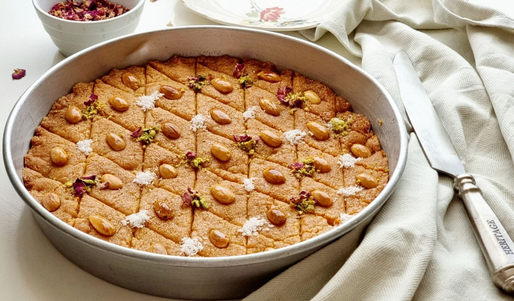

Basbousa Recipe

Description
Basbousa, an Egyptian semolina cake with yogurt is one of the best Egyptian desserts that comes out fairly quick. One bowl, mix and dump kind of recipe, yet is hard to make perfect. Today I am sharing the BEST basbousa recipe that everyone was raving about.
Authentic Egyptian basbousa recipe that is soft and stays soft. A delicious coconut, yogurt and semolina/farina cake that gets sprinkled with nuts and drizzled with syrup to put the final seal of perfection.
Ingredients
For the cake:
- 1 ⅔ cup (306g) Farina
- ½ cup ghee
- 1 Tablespoon honey
- ½ cup (116g) sugar
- ½ cup (97g) plain yogurt
- ½ Tablespoon (6g) baking powder
- ½ cup (45g) unsweetened finely shredded coconut flakes
- 0.5 Tablespoon tahini + 1 Tablespoon ghee to brush at the bottom
For the sugar syrup:
- 1 cup sugar
- 1 cup water
- 1 teaspoon lemon juice
- 2 Tablespoon honey
- ½ teaspoon vanilla extract
- Nuts for garnishing
Steps
Instructions:
- Heat oven to 350F
Make the cake:
- In a deep bowl, combine farina, baking powder, sugar and coconut then mix well.
- Melt the ghee in the microwave or stove top then dissolve the honey in it.
- Add the ghee mixture to the bowl of dry ingredients and mix well to combine.
- Add the yogurt and mix, just until everything is well incorporated.
- Brush a round 12 inch baking sheet with the tahini and spread the basbousa mixture evenly.
- Spread nuts on top evenly to decorate.
- Bake in the middle of your oven until edges start to brown, this took about 10 minutes. Then move the basbousa up to the higher shelf and let it continue cooking until golden brown will take anywhere from 15 to 20 minutes.
Make the sugar syrup:
- When you move the basbousa to the upper shelf start making the syrup.
- In a small saucepan over medium heat, combine syrup ingredients and bring to a boil.
- When it boils, reduce heat and simmer for 10 minutes.
- Turn heat off and keep the syrup warm.
- When basbousa is done, turn off your oven and take it out.
- Pour the syrup evenly and cover the basbousa immediately with foil. Return to the TURNED OFF oven for 5-10 minutes.
- Take it out, cut and enjoy.